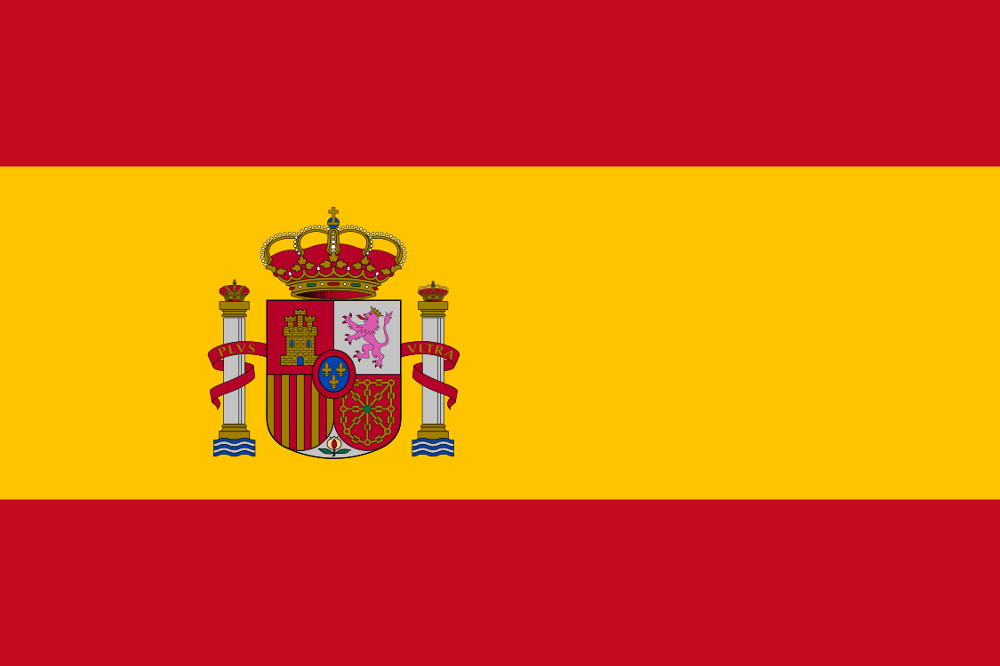
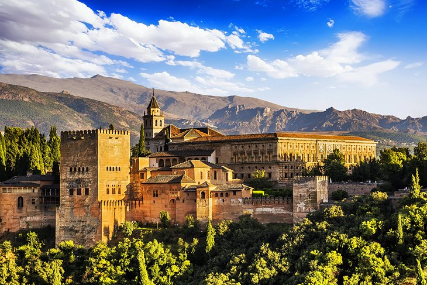
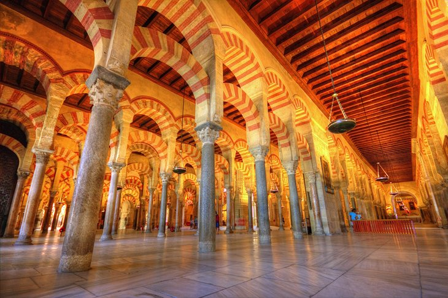

Trip adviser
Spain
Home
Spain
Spain
(Spanish: España, [esˈpaɲa] (About this soundlisten)), formally the Kingdom of Spain(Spanish: Reino de España), is a country in Southwestern Europe with some pockets of territory across the Strait of Gibraltar and the Atlantic Ocean. Its continental European territory is situated on the Iberian Peninsula. Its territory also includes two archipelagos: the Canary Islands off the coast of North Africa, and the Balearic Islands in the Mediterranean Sea. The African exclaves of Ceuta, Melilla, and Peñón de Vélez de la Gomera make Spain the only European country to have a physical border with an African country (Morocco).Several small islands in the Alboran Sea are also part of Spanish territory. The country's mainland is bordered to the south and east by the Mediterranean Sea; to the north and northeast by France, Andorra, and the Bay of Biscay; and to the west and northwest by Portugal and the Atlantic Ocean respectively.

The Alhambra and Generalife Gardens, Granada
No matter how much you have read or how many pictures you have seen of Granada's Alhambra palaces, this Moorish pleasure palace will still take your breath away. The Nasrid dynasty's royal palace is the artistic highlight of Spain's Islamic period, when Al-Andalus — as they called Andalucía — represented the epitome of culture and civilization in Europe's Middle Ages.

650
Select
Barcelona's Sagrada Familia and Gaudi Sites
Antoni Gaudi took the architectural style known as Art Nouveau a step further, even, some have argued, into absurdity. The fanciful and outrageous buildings he created in Barcelona have become landmarks, the signature attractions of this Catalan city. Foremost is The Sagrada Família church, officially the Temple Expiatori de la Sagrada Família or the Holy Family Church of the Atonement. One of Europe's most unconventional churches, it is also unfinished, so as you look down from its tower, you can see the work in progress below.
200
Select
The Great Mosque of Cordoba (Mezquita)
Once the principal mosque of western Islam and still known as the Mezquita, Cordoba's mosque is one of the largest in the world and the finest achievement of Moorish architecture in Spain. In spite of later alterations that carved out its center to build a Catholic cathedral at its heart, the Great Mosque ranks with the Alhambra in Granada as one of the two most splendid examples of Islamic art and architecture in western Europe.

600
Select
Click to check out
Sum